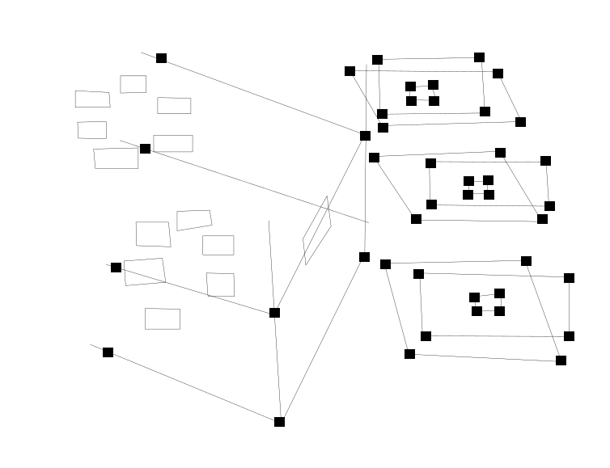

<html>

<head>
<style>
  /* follow https://github.com/dguard/papyroska-jan-8 */

  body {
    margin: 0;
  }
	.statement-area {

  }
  .statement-area .statement-at-front #scene {
      width: 100vw;
       height: 100vh; 
      /*margin-left: 100px;*/
      margin-top: calc(-400px - 200px /* keep ! */ - 180px);
   }
   .knot-character-from-stacking {
      /*width: 870px;*/
      margin-top: 200px;
      margin-left: 270px;
      /*opacity: 0.4;*/
   }
   .knot-character-from-stacking-through-front {
      /*width: 870px;*/
      margin-top: 200px;
      margin-left: 270px;
      /*opacity: 0.4;*/
      /*visibility: hidden;*/
   }
   .knot-character-from-stacking-through-profile {
      /*width: 770px;*/
      margin-top: 200px;
      margin-left: 270px;
      /*opacity: 0.4;*/
      /*visibility: hidden;*/
   }


</style>

	<!-- keep -->
	<!-- follow #vertical-bounce-handler-at-terra-knot-from-bottom-statement-from-locate-statement-through-stacking -->

	<!-- <script src="core-lib/from-knot-locate/draft-handle-sample-from-knot-locate.js"></script> -->
	<script src="core-lib/from-knot-locate/draft-compact-sample-from-knot-locate.js"></script>
	<script src="core-lib/from-knot-locate/draft-sample-from-knot-locate.js"></script>
	<script src="core-lib/from-knot-locate/handle-sample-from-knot-locate.js"></script>

  <!-- <script src="core-lib/knot-front-grid/draft-handle-knot-front-grid.js"></script> -->
  <script src="core-lib/knot-front-grid/draft-compact-knot-front-grid.js"></script>
  <script src="core-lib/knot-front-grid/draft-knot-front-grid.js"></script>
  <script src="core-lib/knot-front-grid/handle-knot-front-grid.js"></script>


	<!-- keep ! -->
  <!--    <script src="core-lib/js/viewported-knot-at-locate-knot-from-bottom-statement/draft-handle-knot-from-cubic-project.js"></script>-->
  <script src="core-lib/js/viewported-knot-locate-from-front/draft-compact-viewported-knot-locate-from-front.js"></script>
  <script src="core-lib/js/viewported-knot-locate-from-front/draft-handle-viewported-knot-locate-from-front.js"></script>
  <script src="core-lib/js/viewported-knot-locate-from-front/viewported-knot-at-pub.js"></script>

</head>

<body>

	<div class="statement-area">
			<!-- keep -->
			<!-- follow #vertical-bounce-handler-at-terra-knot-from-bottom-statement-from-locate-statement-through-stacking -->
			<div class="statement-at-front">
				<!--  -->

        
        <!--  -->

				<!-- keep -->
				<canvas id="scene"></canvas>

			</div>

	</div>


	<script>
		// keep
		// use #vertical-bounce-handler-at-terra-knot-from-bottom-statement-from-locate-statement-through-stacking
		let pencil = new Pencil()

    let draftFabrikk = new DraftFabrikk()


    let bottomStatement = draftFabrikk.constructBottomStatement()
    let sceneWalkingAroundLabirintAtStart = new SceneWalkingAroundLabirintAtStart()


    function KnotFrontGrid() {
        let that = this

        // keep !
        let spawnedPointerBelongings = { y: 460.29801062650074, x: 29.984574863067234, z: 0.027998035964756942, radius: 30, d: 0.9, f: 0.4, frontRatio: 1, debthScaleRatio: 1, frontScaleRatio: 1, profileScaleRatio: 1 }

        // let spawnedPointerBelongings = { y: 508.427650910673, x: 112.49116883677065, z: 0.0347994541654302, radius: 30, d: 0.9, f: 0.4, frontRatio: 1, debthScaleRatio: 1, frontScaleRatio: 1, profileScaleRatio: 1 }

        let passThrough = window['@pencil/draft-knot-front-grid']['passThrough']

        that.passThrough = passThrough

        that.spawnedPointerBelongings = spawnedPointerBelongings
    }

    function SampleFromKnotLocate() {
        let that = this

        // keep !
        let spawnedPointerBelongings = { y: 460.29801062650074, x: 29.984574863067234, z: 0.027998035964756942, radius: 30, d: 0.9, f: 0.4, frontRatio: 1, debthScaleRatio: 1, frontScaleRatio: 1, profileScaleRatio: 1 }

        // let spawnedPointerBelongings = { y: 508.427650910673, x: 112.49116883677065, z: 0.0347994541654302, radius: 30, d: 0.9, f: 0.4, frontRatio: 1, debthScaleRatio: 1, frontScaleRatio: 1, profileScaleRatio: 1 }

        let passThrough = window['@pencil/draft-sample-from-knot-locate']['passThrough']

        that.passThrough = passThrough

        that.spawnedPointerBelongings = spawnedPointerBelongings
    }

    pencil.rememberSample(sceneWalkingAroundLabirintAtStart, new SampleFromKnotLocate())
    pencil.useScene(sceneWalkingAroundLabirintAtStart)

    let knotSampleFromKnotLocate = pencil.constructKnot()
    // keep up !
    draftFabrikk.connectKnotToBottomStatement(bottomStatement, knotSampleFromKnotLocate)
    pencil.putKnotConnectedToBottomStatement(knotSampleFromKnotLocate)


    // keep !
    pencil.rememberSample(sceneWalkingAroundLabirintAtStart, new KnotFrontGrid())
    pencil.useScene(sceneWalkingAroundLabirintAtStart)

    let knotFrontGrid = pencil.constructKnot()
    // keep up !
    draftFabrikk.connectKnotToBottomStatement(bottomStatement, knotFrontGrid)
    pencil.putKnotConnectedToBottomStatement(knotFrontGrid)


    pencil.draw()

    // keep

    let canvas = document.querySelector('.statement-area').querySelector('.statement-at-front').querySelector('#scene')
    let ctx = canvas.getContext('2d')


		let PROJECTION_CENTER_Y = /* keep 250 */ 100
    let PROJECTION_CENTER_X = 100

        // keep
        let calc = function(expression) {
            return expression
        }

        let fromProjectionCenter = function(args) {
            // keep
            let [y,x] = args
            return [
                y + PROJECTION_CENTER_Y,
                x + PROJECTION_CENTER_X + 50
            ]
        }

      let fromCtx = function(ctx) {

          return {
              moveTo: function(y, x) {
                  return ctx.moveTo(x, y)
              },
              lineTo: function(y, x) {
                  return ctx.lineTo(x, y)
              },

              // keep
              arcTo: function(y1, x1, y2, x2, radius) {
                  return ctx.arcTo(x1, y1, x2, y2, radius)
              },
              ellipse: function(y, x, yRadius, xRadois, rotation, startAngle, endAngle) {
                  return ctx.ellipse(x, y, xRadois, yRadius, rotation, startAngle, endAngle)
              }

          }
      }

      let throughStacking = function(fromY) {
          // keep
          // calc(fromY /* keep */ + 20)
          return fromY
      }


      let constructKnotSample = function(knotConstructionFromStarting) {
        // keep
        for(let k = 0; k < knotConstructionFromStarting.slice(1).length; k++) {
          fromCtx(ctx).moveTo(knotConstructionFromStarting[k].fromY, knotConstructionFromStarting[k].fromX)
          fromCtx(ctx).lineTo(knotConstructionFromStarting[k+1].fromY, knotConstructionFromStarting[k+1].fromX)
        }
        ctx.stroke()
      }


      // keep
      let constructKnot = function(knotSample) {

          ctx.beginPath()

          let [y0, x0] = [knotSample.fromBottomLeft.fromY, knotSample.fromBottomLeft.fromX]
          let [yFromBottomRight, xFromBottomRight] = [knotSample.fromBottomRight.fromY, knotSample.fromBottomRight.fromX]

          fromCtx(ctx).moveTo(throughStacking(y0), x0)
          fromCtx(ctx).lineTo(throughStacking(yFromBottomRight), xFromBottomRight)

          let [yFromTopRight, xFromTopRight] = [throughStacking(knotSample.fromTopRight.fromY), knotSample.fromTopRight.fromX]

          fromCtx(ctx).moveTo(throughStacking(yFromBottomRight), xFromBottomRight)
          fromCtx(ctx).lineTo(throughStacking(yFromTopRight), xFromTopRight)

          let [yFromTopLeft, xFromTopLeft] = [throughStacking(knotSample.fromTopLeft.fromY), knotSample.fromTopLeft.fromX]

          fromCtx(ctx).moveTo(throughStacking(yFromTopRight), xFromTopRight)
          fromCtx(ctx).lineTo(throughStacking(yFromTopLeft), xFromTopLeft)

          // keep
          fromCtx(ctx).moveTo(throughStacking(yFromTopLeft), xFromTopLeft)
          fromCtx(ctx).lineTo(throughStacking(y0), x0)

          ctx.stroke()
      }


      let knotThroughBottomStatement = [
        { fromY: 498, fromX: 344 },
        { fromY: 535, fromX: 416 }
      ]
      // keep !
      let knotThroughBottomStatementStartingFrom = { fromY: 498, fromX: 344 }


      let knotFrontStackingFromBottomFromProfile = {
        fromTopLeft: { fromY: 597, fromX: 347 },
        fromTopRight: { fromY: 602, fromX: 370 },
        fromBottomRight: { fromY: 621, fromX: 369 },
        fromBottomLeft: { fromY: 612, fromX: 345 },
      }

      let knotFrontStackingFromBottomFromProfileClosing = {
        fromTopLeft: { fromY: 686, fromX: 586 },
        fromTopRight: { fromY: 698, fromX: 614 },
        fromBottomRight: { fromY: 724, fromX: 616 },
        fromBottomLeft: { fromY: 709, fromX: 587 }        
      }

      constructKnotSample(knotThroughBottomStatement)
      constructKnot(knotFrontStackingFromBottomFromProfile)
      // keep !
      constructKnot(knotFrontStackingFromBottomFromProfileClosing)


      // keep !
      let knotFromDistanceThroughBottomStatement = [
        { fromY: 274, fromX: 472 },
        { fromY: 250, fromX: 423 }
      ]
      let knotFromDistanceThroughBottomStatementStartingFrom = { fromY: 274, fromX: 472 }

      let knotFrontFromDistanceStackingFromBottomFromProfile = {
        fromTopLeft: { fromY: 335, fromX: 422 },
        fromTopRight: { fromY: 353, fromX: 453 },
        fromBottomRight: { fromY: 382, fromX: 452 },
        fromBottomLeft: { fromY: 362, fromX: 421 }
      }
      let knotFrontFromDistanceStackingFromBottomFromProfileClosing = {
        fromTopLeft: { fromY: 478, fromX: 696 },
        fromTopRight: { fromY: 490, fromX: 723 },
        fromBottomRight: { fromY: 515, fromX: 723 },        
        fromBottomLeft: { fromY: 503, fromX: 695 }
      }

      constructKnotSample(knotFromDistanceThroughBottomStatement)
      constructKnot(knotFrontFromDistanceStackingFromBottomFromProfile)
      // keep !
      constructKnot(knotFrontFromDistanceStackingFromBottomFromProfileClosing)

      
      // keep !


      // keep

	</script>

</body>
</html>

